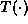
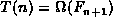
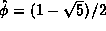
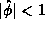
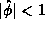

Data Structures and Algorithms
with Object-Oriented Design Patterns in Java
Data Structures and Algorithms
with Object-Oriented Design Patterns in Java
In this section we will compare the asymptotic running times
of two different programs that both compute Fibonacci numbers. The Fibonacci numbers
are the series of numbers
The Fibonacci numbers
are the series of numbers  , , ..., given by
, , ..., given by
Fibonacci numbers are interesting because they seem to crop up
in the most unexpected situations.
However, in this section, we are merely concerned with writing
an algorithm to compute  given n.
given n.
Fibonacci numbers are easy enough to compute. Consider the sequence of Fibonacci numbers
The next number in the sequence is computed simply by adding together
the last two numbers--in this case it is 55=21+34.
Program  is a direct implementation of this idea.
The running time of this algorithm is clearly O(n)
as shown by the analysis in Table .
is a direct implementation of this idea.
The running time of this algorithm is clearly O(n)
as shown by the analysis in Table .
Program: Non-recursive program to compute Fibonacci numbers.
| statement | time |
| 5 | O(1) |
| 6 | O(1) |
| 7a | O(1) |
| 7b | |
| 7c | |
| 9 | |
| 10 | |
| 11 | |
| 13 | O(1) |
| TOTAL | O(n) |
Recall that the Fibonacci numbers are defined recursively:
.
However, the algorithm used in Program
is non-recursive --it is iterative .
What happens if instead of using the iterative algorithm,
we use the definition of Fibonacci numbers to implement directly
a recursive algorithm ?
Such an algorithm is given in Program
and its running time is summarized in Table .
Program: Recursive program to compute Fibonacci numbers.
| time | ||
|
statement | n<2 | |
| 5 | O(1) | O(1) |
| 6 | O(1) | -- |
| 8 | -- | T(n-1)+T(n-2)+O(1) |
| TOTAL | O(1) | T(n-1)+T(n-2)+O(1) |
From Table we find that the running
time of the recursive Fibonacci algorithm is given by the recurrence
But how do you solve a recurrence containing big oh expressions?
It turns out that there is a simple trick we can use to solve
a recurrence containing big oh expressions
as long as we are only interested in an asymptotic bound on the result.
Simply drop the  s from the recurrence,
solve the recurrence,
and put the
s from the recurrence,
solve the recurrence,
and put the  back!
In this case, we need to solve the recurrence
back!
In this case, we need to solve the recurrence
In the previous chapter, we used successfully repeated substitution to solve recurrences. However, in the previous chapter, all of the recurrences only had one instance of  on the right-hand-side--in this case there are two. As a result, repeated substitution won't work.
There is something interesting about this recurrence:
It looks very much like the definition of the Fibonacci numbers.
In fact, we can show by induction on n
that for all  .
.
extbfProof (By induction).
Base Case There are two base cases:
Inductive Hypothesis
Suppose that for for some  .
Then
.
Then
Hence, by induction on k, for all  .
.
So, we can now say with certainty that
the running time of the recursive Fibonacci algorithm,
Program ,
is .
But is this good or bad?
The following theorem shows us how bad this really is!
Theorem (Fibonacci numbers) The Fibonacci numbers are given by the closed form expressionwhere
and .
extbfProof (By induction).
Base Case There are two base cases:
Inductive Hypothesis
Suppose that Equation holds
for for some  .
First, we make the following observation:
.
First, we make the following observation:
Similarly,
Now, we can show the main result:
Hence, by induction, Equation
correctly gives  for all
for all  .
.
Theorem gives us that
where  and .
Consider .
A couple of seconds with a calculator should suffice to convince you
that .
Consequently, as n gets large, is vanishingly small.
Therefore, .
In asymptotic terms, we write .
Now, since ,
we can write that .
and .
Consider .
A couple of seconds with a calculator should suffice to convince you
that .
Consequently, as n gets large, is vanishingly small.
Therefore, .
In asymptotic terms, we write .
Now, since ,
we can write that .
Returning to Program ,
recall that we have already shown that its running time is
.
And since ,
we can write that .
That is, the running time of the recursive Fibonacci program
grows exponentially with increasing n.
And that is really bad in comparison with the linear
running time of Program !
Figure shows the actual running times
of both the non-recursive and recursive algorithms
for computing Fibonacci numbers.
Because the largest Java int is 2147483647,
it is only possible to compute Fibonacci numbers up
to before overflowing.
The graph shows that up to about n=35,
the running times of the two algorithms are comparable.
However, as n increases past 40,
the exponential growth rate of Program
is clearly evident.
In fact, the actual time taken by Program
to compute was in excess of four hours!
Figure: Actual running times of Programs and .
 Copyright © 1998 by Bruno R. Preiss, P.Eng. All rights reserved.
Copyright © 1998 by Bruno R. Preiss, P.Eng. All rights reserved.